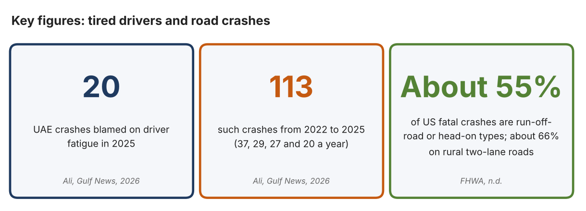
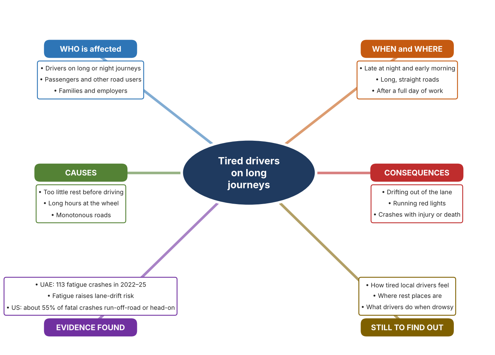
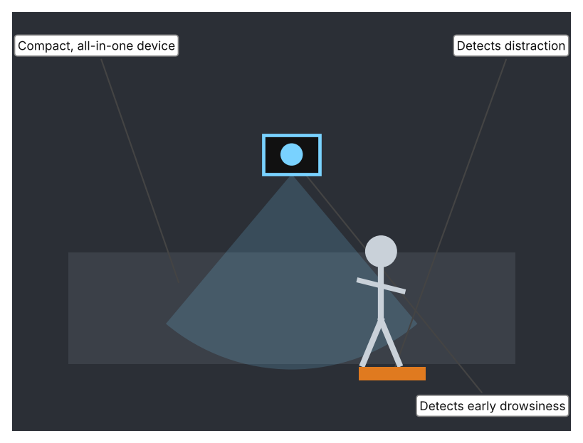
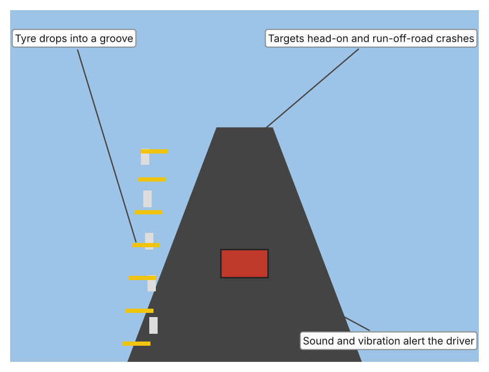
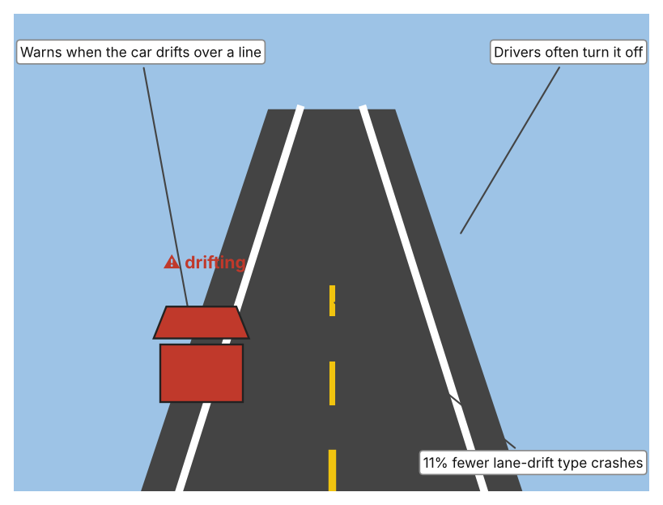

A1 · Design need
Identify and explain the problem faced by your client and community.
My client is the Road Safety Coordinator of a residents' association in Dubai (a fictional client created for this task). Many members drive long distances between emirates for work, and some return late at night after long working days. The coordinator knows families who worry about relatives on the road at night and is concerned that a driver who is tired may not realise how impaired they are. The client needs the risk of crashes caused by tired drivers to be reduced.
The drivers themselves are affected first, especially people who drive for work or take long journeys at night. Their passengers and the other people on the road share the danger, because a drowsy driver's mistake can hurt someone else. Families and employers are affected because they depend on people arriving safely. Emergency services and the wider community carry the cost of every serious crash.
The need is supported by evidence. The UAE Ministry of Interior recorded 20 crashes blamed on driver fatigue in 2025 and 113 between 2022 and 2025, with 37, 29 and 27 in the earlier years, and warned that fatigue raises the risk of sudden lane deviation and running red lights (Ali). The article reports most of these crashes in Abu Dhabi and does not give deaths or injuries. The US Federal Highway Administration reports that about 55% of fatal crashes are run-off-road or head-on types, rising to about 66% on rural two-lane roads, and that about 65% of fatal head-on crashes result from drifting over the centre line (FHWA). These US figures are not about fatigue alone, so I treat them as background about what happens when a vehicle leaves its lane.
Figure 1 summarises the key figures. In my own words, tiredness is dangerous because it makes the driver less able to notice that they are tired. The crash counts in the UAE seem to be falling, but the figures only count crashes that officials blamed on fatigue, so they may be an underestimate. I still need to find out how tired my community's drivers feel on a typical journey, and I will do that with a route checklist and a short survey. Figure 2 is my mind map of the problem.
369 words


A2 · Research plan
Six research questions of different types, each with a priority, a research type and evidence.
| # | Question | Priority | Primary / secondary | Evidence | Brief answer |
|---|---|---|---|---|---|
| 1 | Factual: How many UAE crashes are blamed on driver fatigue, and what trend is shown? | High | Secondary | Ali, Gulf News, 2026 (Appendix A, Source 1) | 20 crashes in 2025; 113 from 2022 to 2025 (37, 29, 27 and 20), a falling trend; most in Abu Dhabi; no deaths or injuries reported in the article. |
| 2 | Factual: What kinds of crashes are the most deadly when a vehicle leaves its lane? | High | Secondary | FHWA decision guide, n.d. (Appendix A, Source 2) | Run-off-road and head-on crashes make up about 55% of US fatal crashes (about 66% on rural two-lane roads); about 65% of fatal head-on crashes result from drifting over the centre line. |
| 3 | Conceptual: Why is a tired driver unsafe, and how can drowsiness or lane drift be detected or discouraged? | Medium | Secondary | Appendix A, Sources 1, 3, 4 and 5 | Fatigue raises the risk of sudden lane deviation and red-light running (Source 1). Drowsiness can be detected in the driver, lane drift can be warned about by the vehicle, and the road itself can alert a drifting driver. |
| 4 | Debatable: Should crashes caused by drowsy driving be reduced by watching the driver, by warning the vehicle's driver about lane drift, or by changing the road? | Medium | Secondary | Appendix A, Sources 3, 4 and 5 | Watching the driver addresses the cause but needs equipment in each vehicle; lane warnings help only after drift begins and are often switched off; road features work for everyone but only where built. My view: each covers a different moment. |
| 5 | Debatable (challenges my assumption, UAE source): Fatigue crashes are falling in the UAE, so is drowsy driving still a serious problem? | High | Secondary | Ali, Gulf News, 2026 (Appendix A, Source 1) | The count fell from 37 in 2022 to 20 in 2025, which is encouraging, but 113 crashes in four years is still a lot, and only crashes that officials judged to be fatigue-related are counted, so the real number may be higher. |
| 6 | Factual (primary): How tired do drivers in our community feel on usual journeys, and what rest places exist on a local route? | High | Primary | Own route checklist and driver survey (Appendix A, Sources 6 and 7) | [Student data needed: write the checklist counts and survey averages (with permission from each adult), then two sentences on the pattern you see.] |
A3 · Existing products
Three significantly different products, each analysed with ACCESS FM, with pros and cons.
Product 1: Driver fatigue and distraction monitor (Seeing Machines Guardian Gen 3)

Illustration by the author based on Seeing Machines, “Next Generation Driver Fatigue and Distraction Technology” (Appendix A, Source 3). [Student: replace with a photo from the source, cited MLA 9]
Product 2: Rumble strips on the road edge or centre line

Illustration by the author based on FHWA, “Decision Support Guide for the Installation of Shoulder and Center Line Rumble Strips” (Appendix A, Source 2). [Student: replace with a photo from the source, cited MLA 9]
Product 3: Lane departure warning in a vehicle

Illustration by the author based on IIHS, “Lane Departure Warning, Blind Spot Detection Help Drivers Avoid Trouble” (Appendix A, Source 4). [Student: replace with a photo from the source, cited MLA 9]
ACCESS FM analysis
| ACCESS FM | Product 1 | Product 2 | Product 3 |
|---|---|---|---|
| Aesthetics | Compact device; the page gives no description of looks. | Grooves cut into, or strips raised on, the road surface. | Part of the vehicle's systems; no separate look. |
| Cost | Price not stated on the page. | Benefit-cost ratios exceed 100 to 1 according to FHWA. | Included in some vehicles; price not stated. |
| Customer | Fleet operators; the page describes it as a fleet driver-safety device. | All drivers on roads where the strips are installed. | Drivers of vehicles that have the feature. |
| Environment | Power needs are not stated. | Works with no power; set into the road. | Needs the vehicle's power and sensors. |
| Size | Described as compact and all-in-one; dimensions not stated. | Dimensions depend on the design; the page gives no numbers. | Built into the vehicle. |
| Safety | Offers real-time intervention against drowsiness and distraction; the page does not state how. Bystander view: other road users are protected if the driver is alerted. | Milled strips make sound and vibration so a drifting driver is alerted. Bystander view: can be noisy for people living near the road. | Reduces single-vehicle, sideswipe and head-on crashes by 11% and injury crashes by 21%. Bystander view: others benefit, but the driver may switch it off. |
| Function | Detects early drowsiness and advanced distraction and intervenes in real time. | Alerts the driver who drifts onto the shoulder or centre line, and prevents run-off-road and head-on crashes. | Warns the driver when the vehicle drifts out of its lane. |
| Materials | Materials are not stated on the page. | Milled grooves in the road surface or raised strips; materials depend on the road. | Sensors and software; materials are not stated. |
Pros and cons
| Product 1 | Product 2 | Product 3 | |
|---|---|---|---|
| Pro | Targets the cause, because it detects drowsiness and distraction early. | Works for every driver without any action and is very cost-effective. | Reduces crashes and injuries, and works automatically while driving. |
| Con | Details such as price, power and how it alerts are not stated, and it only protects vehicles that have it. | Works only after the vehicle has drifted and only where installed; adds noise near homes. | Only works after the drift begins, is often switched off and needs a vehicle that has it. |
A4 · Design brief
Restate the need, summarise the research and the existing products, and state the design intent.
My client, the Road Safety Coordinator of a residents' association in Dubai, needs the risk of crashes caused by tired drivers to be reduced. The Ministry of Interior recorded 20 crashes blamed on driver fatigue in 2025 and 113 between 2022 and 2025, and warned that fatigue raises the risk of sudden lane deviation and running red lights (Appendix A, Source 1). In the US, run-off-road and head-on crashes make up about 55% of fatal crashes (Appendix A, Source 2).
My research shows that the danger of fatigue is that the driver becomes less able to react and often drifts from the lane without noticing (Appendix A, Sources 1 and 2). My debatable questions led me to conclude that watching the driver, warning about drift and changing the road each address a different moment before a crash. My challenged assumption was that falling numbers mean the problem is solved; the number fell from 37 to 20, but only crashes officials judged to be fatigue-related are counted. I will gather my own evidence with a route checklist and a driver survey, with permission (Appendix A, Sources 6 and 7).
I analysed three very different existing solutions. A driver monitor detects early drowsiness and distraction and intervenes in real time, but the page does not state how it alerts, its price or its power needs (Appendix A, Source 3). Rumble strips alert a drifting driver with sound and vibration at very low cost, but they only work after the vehicle has drifted and only where they are built (Appendix A, Source 2). Lane departure warning reduces single-vehicle, sideswipe and head-on crashes by 11%, but drivers often turn it off (Appendix A, Source 4). They give me three ideas for inspiration: sense the driver, alert at the moment of drift, and change the road.
My design intent is therefore to create a solution that reduces the chance that a tired driver causes a crash, by helping the driver to notice tiredness or by discouraging drifting. It must be affordable, reliable by day and night, hard to ignore, and acceptable to drivers so that they do not switch it off. I have deliberately not fixed what form it will take. That decision will be made in Criterion B, after I analyse my own checklist and survey against the evidence in Appendix A.
388 words
Appendix A · Research notes and sources
Secondary sources in MLA 9, with notes and where each source is used.
| # | Source (MLA 9) | Key notes | Used in |
|---|---|---|---|
| 1 | Ali, Aghaddir. “UAE: 20 Crashes in 2025 Blamed on Driver Fatigue, Drowsiness.” Gulf News, 5 May 2026, gulfnews.com/amp/story/uae%2Ftransport%2Fuae-20-crashes-in-2025-blamed-on-driver-fatigue-drowsiness-1.500529398. Accessed 21 Oct. 2026. | Ministry of Interior: 20 crashes in 2025 and 113 in 2022–2025 (37, 29, 27, 20); Abu Dhabi accounts for most; no deaths or injuries reported; fatigue raises risk of red-light running and sudden lane deviation; rest before driving. | A1; A2 Q1, Q3 and Q5; A4. |
| 2 | “Decision Support Guide for the Installation of Shoulder and Center Line Rumble Strips on Non-Freeways.” Federal Highway Administration, highways.dot.gov/safety/rwd/keep-vehicles-road/rumble-strips/decision-support-guide-installation-shoulder-and-1. Accessed 21 Oct. 2026. | US data: run-off-road crashes are 64.4% of single-vehicle crashes; about 55% of fatal crashes are the types rumble strips target (about 66% on rural two-lane roads); about 65% of fatal head-on crashes result from drifting over the centre line; milled strips make sound and vibration; benefit-cost ratios above 100 to 1. No date shown. | A1; A2 Q2, Q4; A3 Product 2; A4. |
| 3 | “Next Generation Driver Fatigue and Distraction Technology.” Seeing Machines, 17 Feb. 2025, seeingmachines.com/?p=6521. Accessed 21 Oct. 2026. | Guardian Generation 3: compact all-in-one fleet device with early drowsiness and advanced distraction detection and real-time intervention; the page gives no accuracy, price or alert method. | A2 Q3 and Q4; A3 Product 1; A4. |
| 4 | “Lane Departure Warning, Blind Spot Detection Help Drivers Avoid Trouble.” Insurance Institute for Highway Safety, 23 Aug. 2017, www.iihs.org/news/detail/lane-departure-warning-blind-spot-detection-help-drivers-avoid-trouble. Accessed 21 Oct. 2026. | Lane departure warning lowers rates of single-vehicle, sideswipe and head-on crashes by 11% and injury crashes of those types by 21%; drivers often turn it off. US study from 2017. | A2 Q3 and Q4; A3 Product 3; A4. |
| 5 | Primary: route checklist, completed by the student on [date]. Accessed own data. | [Student: summarise your counts.] | A2 primary question; A4. |
| 6 | Primary: survey of [number] people, completed on [date]. | [Student: summarise your averages.] | A2 primary question; A4. |
Primary research instrument 1: route checklist
Student completes the checklist as a passenger with an adult, by day, and never while driving.
| Part of route | Rest area or petrol station (Y/N) | Edge or centre markings clear (Y/N) | Lit at night (Y/N) | Sign about rest or fatigue (Y/N) | Notes |
|---|---|---|---|---|---|
| Main road section | |||||
| Rest area or petrol station | |||||
| Road edge or shoulder | |||||
| Exit or junction |
Primary research instrument 2: survey
Rate each statement from 1 (strongly disagree) to 5 (strongly agree). Collect responses with permission and record no names.
| Statement | 1 | 2 | 3 | 4 | 5 | Total responses |
|---|---|---|---|---|---|---|
| I feel alert on long journeys. | ||||||
| I have felt very sleepy while driving or travelling. | ||||||
| There are enough places to rest on my usual route. | ||||||
| I would stop to rest if I felt tired. |